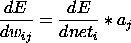
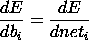
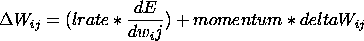
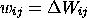

In this phase, we calculate quantities called dE/dw_ij and dE/db_i for all of the weights and all of the biases in the network. These quantities again represent the negative derivative of the Error with respect to the weights and the biases. The formulae are:
and

After these error derivatives are calculated, there are two options. They may be summed over an entire epoch of training, or they may be used to change the weights immediately. In the latter case, the variable dE/dw_ij accumulates the value of this derivative over all of the patterns processed within the epoch, and similarly for dE/db_i.
When the weight change is made, there are two further values calculated. First, the exact magnitude of the change to be made is calculated:
This expression introduces a learning rate parameter, which scales the size of the effect of the weight error derivative, and a momentum parameter, which scales the extent to which previous weight changes carry through to the current weight change. Note that in the expression for deltaW_ij the value of deltaW_ij from the previous time step appears on the right hand side. An analogous expression is used to calculate the deltaBias_i. Finally, the weight change is actually applied:
Once again, an analogous expression governs the updating of bias_i.